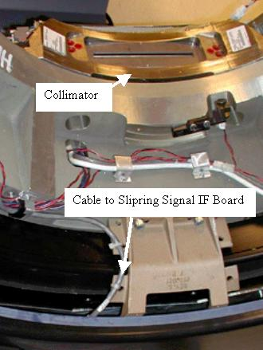
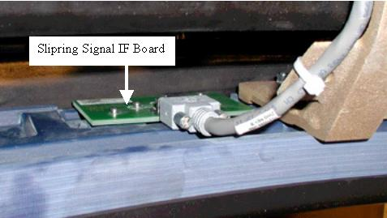

Operating Documentation
Direction 5181178-800, Rev# 16
BrightSpeed Select Service Methods Gen
Module Version 1.0, Version Date 2/16/07
Operating Documentation |
| Required Persons | Preliminary Reqs | Procedure | Finalization |
|---|---|---|---|
| 1 | Not Applicable | 60 mins | 30 mins |
| Last Revised: | February 9, 2004 |
| Item | Qty | Effectivity | Part# | Manufacturer | |
|---|---|---|---|---|---|
| 3mm Hex wrench | 1 | - | - | - | |
| Item | Qty | Effectivity | Part# | Manufacturer | |
|---|---|---|---|---|---|
| Slipring Signal Interface Board | 1 | - | - | - | |
| ||||
| Electrocution hazard | ||||
| High Voltage present. | ||||
| Use proper lockout/tagout procedures before replacing components. |
| Condition | Reference | Effectivity |
|---|---|---|
Gantry power must be locked out using LOTO procedures prior to replacing this component. | - | - |
Remove the Gantry side and top covers.
Disable gantry Axial Drive and HVDC on the service switch panel.
Remove the Gantry rear cover.
The Signal IF board is mounted on the gantry side surface of the Slipring. Manually rotate the gantry such that the filter board is located on the bottom. The IF board is on the Slipring at the same location as the collimator. See Illustration 1 below.
Illustration 1: Slipring Signal IF board location

Engage the gantry rotational lock and turn off the 120VAC switch at the service switch panel. Use appropriate LOTO procedures to ensure all voltages have been removed from the Slipring area.
Remove the cable and bolts on the Signal Interface board and remove the board. See Illustration 2 below.
Illustration 2: Signal IF Board

Install the new board by inserting the bolts. Thread them in till they are all seated against the board.
| ||||
| Applying too much force when tightening bolts can strip the threaded inserts out of the fiberglass ring. | ||||
Since a torque wrench will not fit between the slipring and gantry frame, finger tighten the 4 bolts. Then using an hex wrench tighten ¼ turn more.
Attach the signal cable.
Disengage the gantry rotation lock.
| ||||
| Always turn ON the 120 VAC before the HVDC. Turning ON HVDC power before 120 VAC power can result in equipment damage. | ||||
Reapply power to the gantry as removed during LOTO procedures. Turn on the 120VAC, HVDC and Axial Drive service switches.
Reinstall gantry covers.
Perform a Hardware Reset.
Check the current level of LSCOM errors.
Run the following scans.
Acquire 10 scouts: (120kV/40mA, 1000mm table movement)
Acquire 100 axials: (120kV/80mA, 0.5 sec. Scan)
Acquire 1 helical: (120kV/40mA, 30 sec. Scan)
Acquire 10 axial scans: (120kV/400mA, 4 sec. Scan)
Verify NO increase in LSCOM errors.